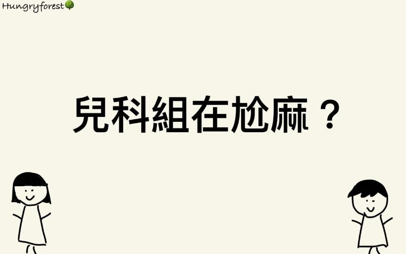

兒科、復健科、醫學生專欄與醫院生活，共 9 篇。
《醫學知識小分享》 🌟刺青會增加淋巴癌的風險🤔🌟 嗨囉🤪 我們是Hungryforest🌳 最近在Lancet上看到一篇有趣的文章😎 它提到刺青的墨水可能含有一些致癌物質，那刺青的過程也會引發一連串的免疫反應，使墨水擴散…
全球氣候變遷，造成自然災害越來越多，它除了奪走性命，還可能會影響到身心健康😰 文章連結🔗: https://www.thelancet.com/journals/lanwpc/article/PIIS2666 6065(…

，小編在醫院私心最討厭遇到的事情😫😤🫠 《醫院的那些事》 🌟超討厭排行榜🌟 以下順序不代表排名，都一樣很討厭😮💨 1. 沒有值班，病人16:55上來住院 2. 負責值班，病人17:01上來住院 3. 鎖床前1分鐘被壓住…
又快要到了醫院更換新血的時期，這次我們想要用問答式的方法，跟大家分享一下歪2內外婦兒組的朋友們，平常都在尬麻🤔也希望能透過這些文章，給學弟妹們未來的選擇方向😎 這次我們邀請到的是在中山醫內科組訓練的朋朋來為我們分享❤️ …
最近因為適逢大學放榜，有許多剛考上醫學系的學弟妹們，抱著一顆既期待又怕受傷害的心情，等待步入醫學的殿堂，所以小編們也收到了許多有關醫學系的問題，那就藉由這篇文跟大家分享一下小編的不負責任建議🤣🤣🤣（以下言論都是小編自己主…